Día Mundial de la Salud 7 de abril
INFOGRAFIA
Más información
1.- ¿Cuándo se celebra y por qué?
2.- ¿Qué se trata de conseguir con la campaña?
3.-¿Qué hace la OMS?
4.- Cobertura Sanitaria Universal
5.- Lo que NO incluye la cobertura sanitaria universal
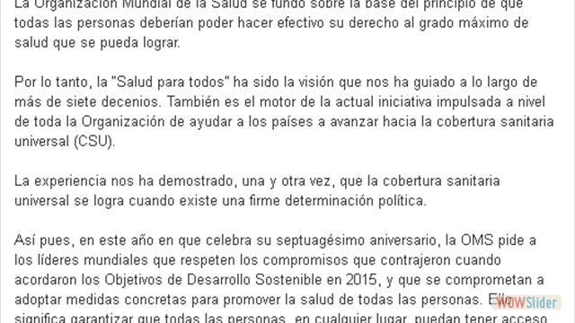
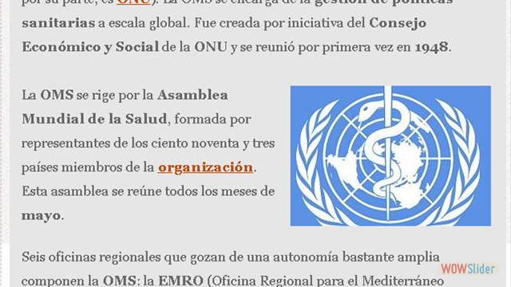
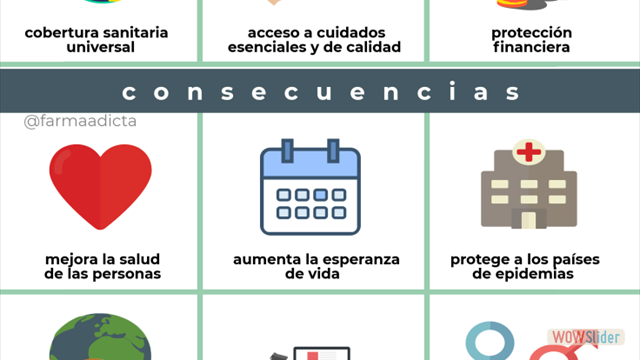
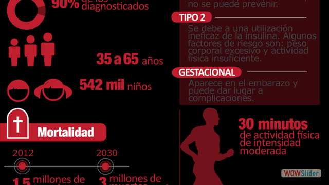
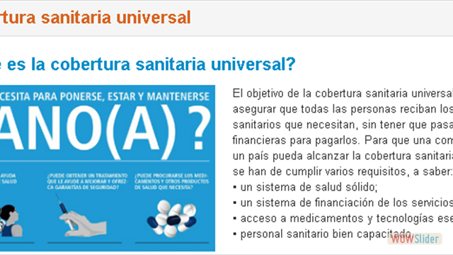
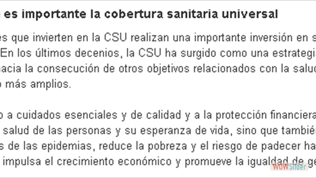
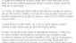1
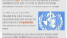2
3
4
5
6
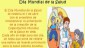7
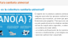8
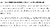9
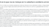10
slideshow javascript
by WOWSlider.com v8.8
Aplicación 3 DÍA MUNDIAL DE LA SALUD
Zuriel Kyriat-yael Larios Vaquero
¿Cuándo se celebra y por qué?
Aplicación 3 DÍA MUNDIAL DE LA SALUD
Zuriel Kyriat-yael Larios Vaquero
¿Qué se trata de conseguir con la campaña?
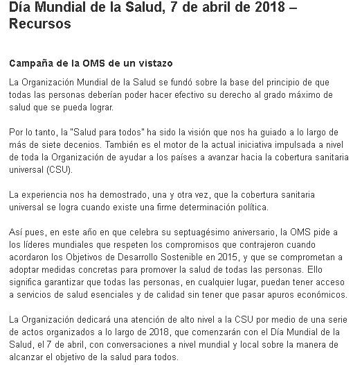
Aplicación 3 DÍA MUNDIAL DE LA SALUD
Zuriel Kyriat-yael Larios Vaquero
¿Qué hace la OMS?
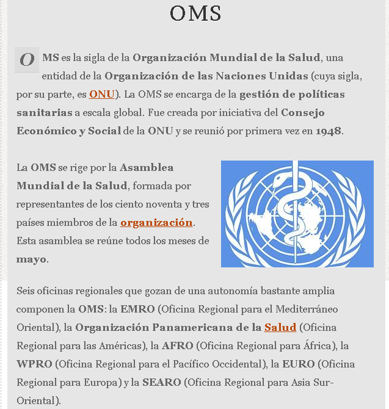
Aplicación 3 DÍA MUNDIAL DE LA SALUD
Zuriel Kyriat-yael Larios Vaquero
Cobertura Sanitaria Universal
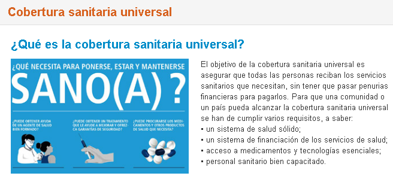
Visitar pagina de la OMS
Aplicación 3 DÍA MUNDIAL DE LA SALUD
Zuriel Kyriat-yael Larios Vaquero
Lo que NO incluye la cobertura sanitaria universal
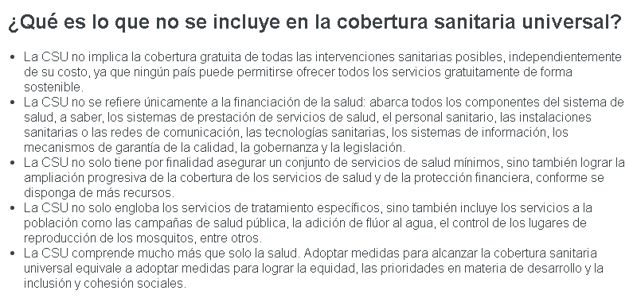
Aplicación 3 DÍA MUNDIAL DE LA SALUD
Zuriel Kyriat-yael Larios Vaquero